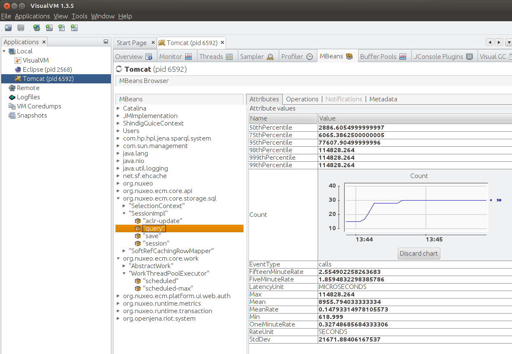

These release notes are a merge of the previous Fast Track release notes available here.
For Administrators
Monitoring
Use Coda Hale Yammer Metrics to instrument Nuxeo, providing lots of internal metrics, accessible from JMX or Graphite. Read more in our documentation.


Multi-Tabs Navigation
Nuxeo now handles multiple-tabs navigation without having a "cannot restore view" error. A new StateManager has been introduced in order to store ViewStates per conversation. In other words, when a user navigates to a new tab, a new conversation is started and its view states are saved separately. If the user comes back to an old tab, he will not have "view expired" exceptions anymore.
- By default, 4 conversation states are saved following a LRU policy (Least Recently Used).
- Each conversation state still has max 4 saved view states.
- This means that potentially, a maximum of 16 view states are saved in session.
You can adapt these settings using the apropriate parameters in nuxeo.conf.
Right Audit
This Marketplace package allows to run an audit on all permissions for all users of a document tree. The result is an XLS matrix for every exported document showing permission for each user, including blocking permissions if any.
You can also do an excel export of all the users and groups.

Kerberos Login Module
A Kerberos module has been contributed by OpenWide, allowing authentication throught the Kerberos protocol.
You can also login to Nuxeo using your OpenID, thanks to Nelson Silva.
MarketPlace/Update Center
nuxectl commands
mp-show: Show Marketplace package(s) information. You must provide the package file(s), name(s) or ID(s) as parameter.
Blogs and Websites Packaging
Blogs and Website have been removed from the DM module and are now independant packages.
Database Support
We have updated the MS SQL Server documentation with new recommendations.
PostgreSQL 9.2-1002 JDBC4 driver supports simple connection fail-over useful for high-availability configurations.
PostgreSQL 9.3 is officialy supported.
Nuxeo.conf New Parameters
| Parameter | Default Value | Description |
|---|---|---|
| nuxeo.jsf.numberOfConversationsInSession | 4 | Since 5.7.2, Parameter to control the number of conversation states that are saved in session. Each conversation holds a number of view states that is defined by nuxeo.jsf.numberOfViewsInSession |
| nuxeo.jsf.numberOfViewsInSession | 4 | Since 5.7.2 (5.6-HF20) Parameter to control the JSF init parameter com.sun.faces.numberOfViewsInSession |
| nuxeo.jsf.numberOfLogicalViews | 4 | Since 5.7.2 (5.6-HF20) Parameter to control the JSF init parameter com.sun.faces.numberOfLogicalViews |
| nuxeo.notification.eMailSigner | The Nuxeo team | Signer of the sent e-mail. |
| org.nuxeo.automation.trace | false | Since Nuxeo 5.7.3, you can enable this mode if you'd like to display automation traces during runtime:
|
| org.nuxeo.automation.trace.printable | * | Since Nuxeo 5.7.3, by default, all automation executions are 'printable' (appear in logs) when automation trace mode is on.
|
| nuxeo.jsf.enableDoubleClickShield | false (unset) | Enable a shield on forms to prevent users from submitting twice the same form (accidental double-click) |
| org.nuxeo.dnd.upload.timeout | 30000 | Maximum time for uploading a file via Drag & Drop to the server. |
| org.nuxeo.dnd.exec.timeout | 30000 | Maximum time for executing import of files uploaded via Drag & Drop |
| org.nuxeo.dnd.extendedmode.timeout | 2000 | Mouseover time to switch to extended mode UI (setting to -1 disables the extended mode) |
| nuxeo.jsf.useAjaxTabs | false (unset) | Enable ajaxified tabs on document views. |
| org.nuxeo.prod | false | Setting this property to "true" will display a quite visible warning message in the Admin Center, stating that this is a production instance. This is useful for administrators who are sometimes confusing their Nuxeo production server with their test server (not to rat anyone out). |
| nuxeo.vcs.blocking-timeout-millis | 1O0 | Database maximum wait time to get a connection from the pool when all connections are in use, for Nuxeo repository (VCS). |
| nuxeo.vcs.idle-timeout-minutes | 10 | Database timeout after which connections not in use are removed from the pool, for Nuxeo repository (VCS). |
| nuxeo.vcs.fulltext.disabled | false | |
| nuxeo.vcs.noddl | false | |
| nuxeo.vcs.idtype | varchar |